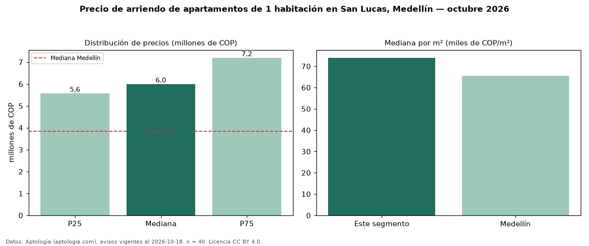

Precio de arriendo de apartamentos de 1 habitación en San Lucas, Medellín — octubre 2026
En San Lucas, Medellín, la mediana de canon mensual de apartamentos de 1 habitación es COP 6,00 millones, según 40 avisos vigentes. Eso es 56 % por encima de la mediana de Medellín para apartamentos de 1 habitación (COP 3,85 millones). Por metro cuadrado, la mediana es COP 74.000/m² al mes (n = 33 avisos con área), 13 % por encima de Medellín (COP 65.599/m²). Son 14 % de los 276 avisos de apartamentos en arriendo de la zona, cuya mediana general es COP 7,45 millones (−19 %). El área mediana anunciada es 84 m². El estrato más frecuente es 6 (89 % de los avisos con estrato). 89 % de los avisos con el dato declara parqueadero o cochera. La mitad central de los avisos va de COP 5,58 millones a COP 7,20 millones (razón 1,3), una dispersión baja. Datos: Aptología (aptologia.com), CC BY 4.0 — https://www.aptologia.com/arriendo/medellin/san-lucas. Archivos: PDF, CSV con las cifras y gráfica PNG.

| Avisos únicos | 40 |
|---|---|
| Percentil 25 | COP 5.575.000 |
| Mediana | COP 6.000.000 |
| Percentil 75 | COP 7.200.000 |
| Mediana por m² | COP 74.000 |
Fuente: avisos vigentes de portales inmobiliarios recopilados por Aptología, deduplicados (mínimo 30 avisos únicos por celda). Precios pedidos, no cerrados. Fecha: 2026-10-18.